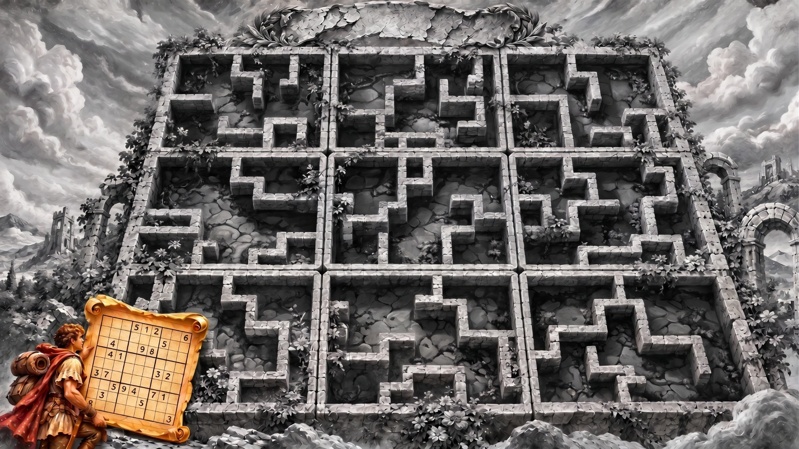

樂在齡中 · INDEPENDENT GAME MODULE
Achievement Engine V1.5
4×4 蝴蝶出現試作版
固定成就世界
迷宮世界｜蝴蝶出現測試
初始畫面只有001空白迷宮；完成第1步後，蝴蝶從無到有出現。
0/1已完成里程碑
世界復甦進度0%

目前接入五張世界階段圖；第 1～43 關的獨立透明物件圖層，待素材拆解完成後放入 assets/layers 即可顯示。
MILESTONE TESTER
里程碑測試
下一關：第 1 關
測試時依序解鎖，每次只完成一個里程碑。
第 1～43 關 物件解鎖圖層第 44 關 天空恢復色彩（002）第 45 關 迷宮與完整世界（003 → 004）